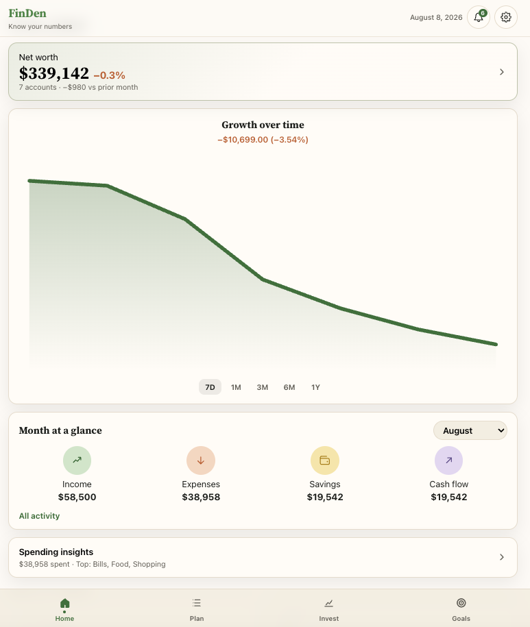
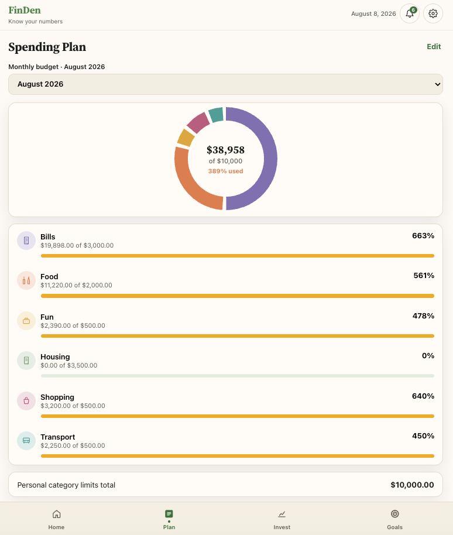
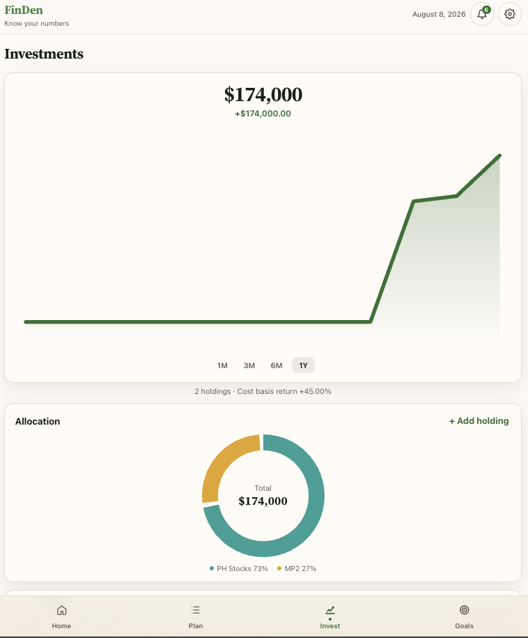
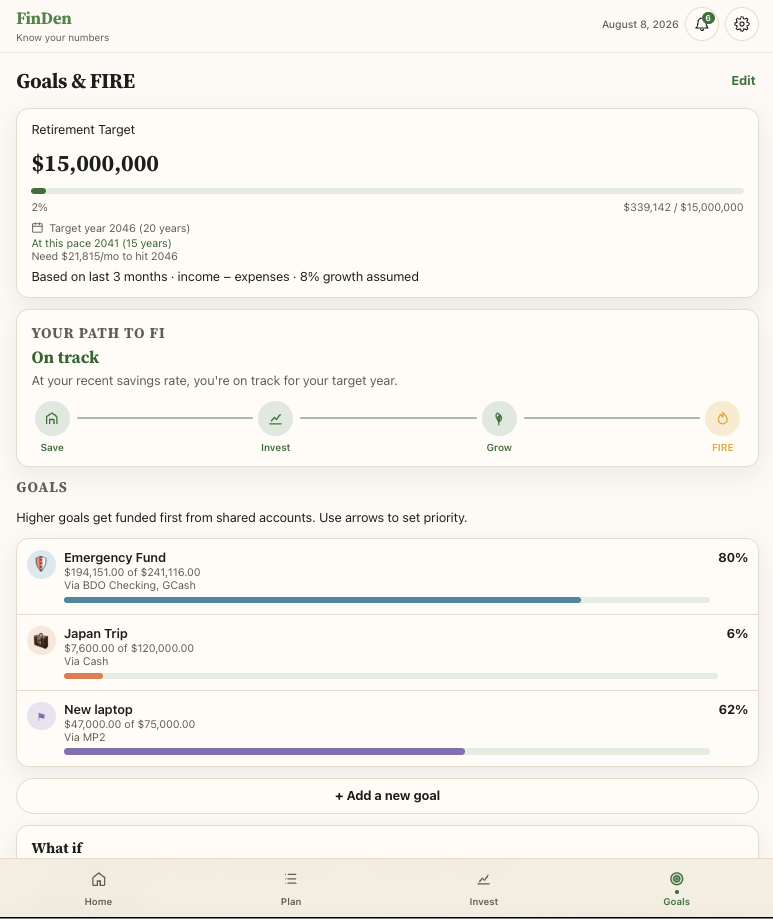

FinDen
A local-first personal finance app for accounts, spending plans, investments, and FIRE goals — built for Android and web with the same product model on both.
Problem
Day-to-day money often lives across banks, e-wallets, credit cards, investments, and mental notes. Spreadsheets and separate apps make it hard to see net worth, cash flow, and progress toward goals in one place — especially when you want something private and usable offline.
Solution
FinDen is a calm financial den: track asset and liability accounts, income and expenses, transfers, a monthly spending plan, investment holdings, bills, and long-term goals including FIRE. Android and web stay in functional parity, keep data on-device by default, and share design tokens so the experience feels like one product.
Architecture
FinDen is a local-first monorepo with Android and web clients that share one product model. Both cover accounts, transactions, transfers, spending plans, investments, goals (including FIRE), bills, and settings with backup/import. Domain logic lives in each client so net worth, cash flow, and plan utilization stay aligned.
Android persists with Room behind a repository/ViewModel stack; web
uses Zustand with localStorage. No sign-in is required for core
use. Shared tokens.json generates Android colors and
web CSS. Vite builds deploy to GitHub Pages via Actions. An ASP.NET
Core API is reserved for future sync; today everything runs
client-side.
Clients
Shared product domain
Local-first storage
Shared design · Delivery · Planned
Technologies
- Kotlin
- Jetpack Compose
- Material 3
- Room
- ViewModel
- React
- TypeScript
- Vite
- Zustand
- localStorage
- Design tokens
- GitHub Actions
- GitHub Pages
- ASP.NET Core (planned)
Screenshots
Home, spending plan, investments, and goals from the live web app.




Demo video
A quick walkthrough of FinDen across home, plan, invest, and goals.